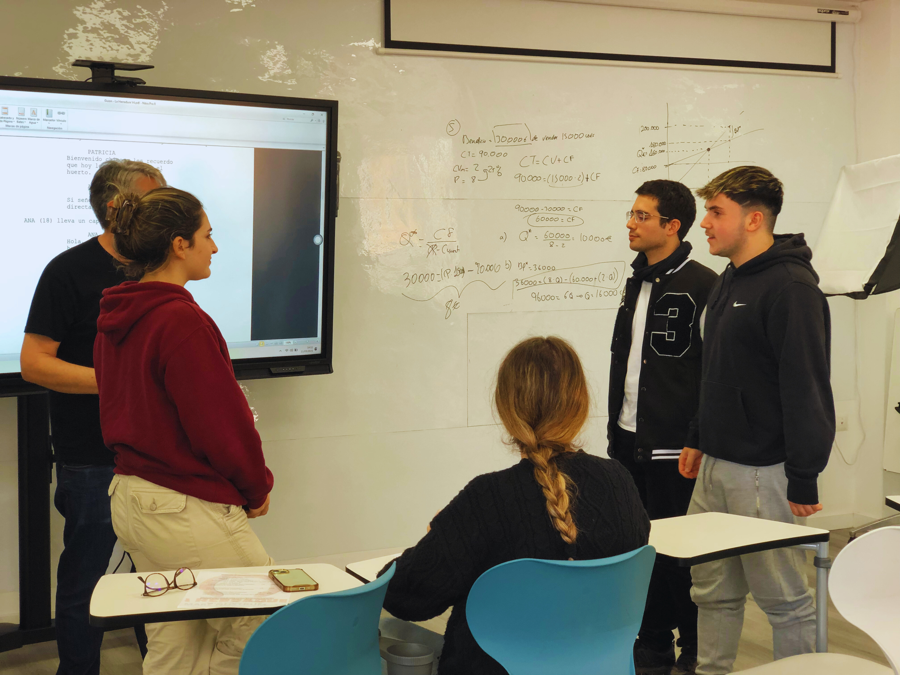

En busca del elenco de estrellas
Para poder dar vida a los personajes de nuestra peli, lo primero que hicimos fue lanzar la convocatoria del casting. Mandamos un correo al profesorado para que avisaran a sus clases del día del casting. Necesitábamos tanto alumnado como profesorado.

También se creó un formulario en Google Forms con el que obtener las solicitudes de participación:

Además, para extender la propia convocatoria se pegaron por todo el instituto carteles con un único objetivo: “¿Quieres ser protagonista? ¡Anímate y prueba!”.
|
Alumnado IES Mare Nostrum. Alumnado pegando carteles casting (CC BY-SA)
|
|
Gracias a un divertido Escape Room guiamos a los interesados hacia el aula donde tenía lugar el casting:
 |
 |
|
Alumnado IES Mare Nostrum. Alumnado preparando carteles escape room (CC BY-SA)
|
|
Y así fue como quedaron las pistas del Escape Room que se fueron pegando por distintos lugares del instituto:
Escape Room 1
Escape Room 2
Escape Room 3
Escape Room 4
Escape Room 5
Escape Room 6
Escape Room 7

El día del casting nos reunimos en el aula Ateca del instituto. Previamente al inicio de los ensayos se recogió, mediante un formulario, información de cada uno de los candidatos (todos ellos mayores de edad) tanto personal como relacionada con su experiencia en la interpretación.
El aforo del aula con los asistentes al casting:
|
Elaboración propia. Charla casting (CC BY-SA)
|
|
Una vez en el aula, cada persona que se presentó tuvo su momento para leer un trozo del guion y hacer una pequeña interpretación de los personajes principales. No se trataba de hacerlo perfecto, sino de atreverse, pasarlo bien y mostrar personalidad. Hubo escenas más divertidas y otras más serias y profesionales. La audición fue divertida y con ella trabajamos la expresión oral y la improvisación.
|  | |
|
Elaboración propia. Audición día casting (CC BY-SA)
|
|
Durante las pruebas fuimos fijándonos en cosas como la naturalidad, la voz, la expresividad y sobre todo las ganas de formar parte del proyecto. El ambiente fue relajado, casi como un juego, para que nadie se sintiera presionado.
Al final, después de ver todas las audiciones, se eligieron los alumnos y alumnas que mejor encajaban en cada papel. Pero lo más importante no fue solo repartir personajes, sino ver cómo todos los que participaron se animaron a salir de su zona de confort y a ser parte activa de LA HERRADURA.
Finalmente los alumnos y alumnas seleccionados posaron ante las cámaras.
|
Elaboración propia. Elenco de seleccionados (CC BY-SA)
|
|